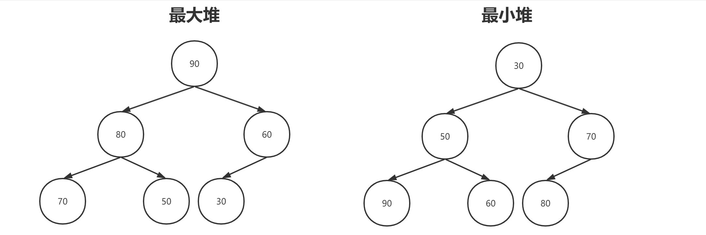
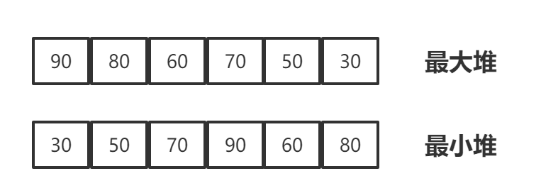
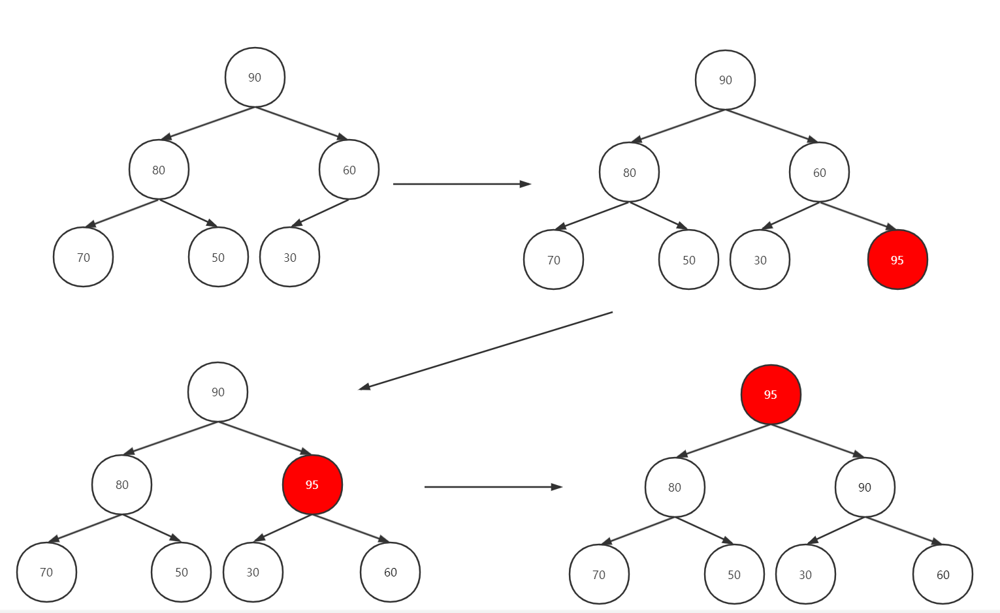
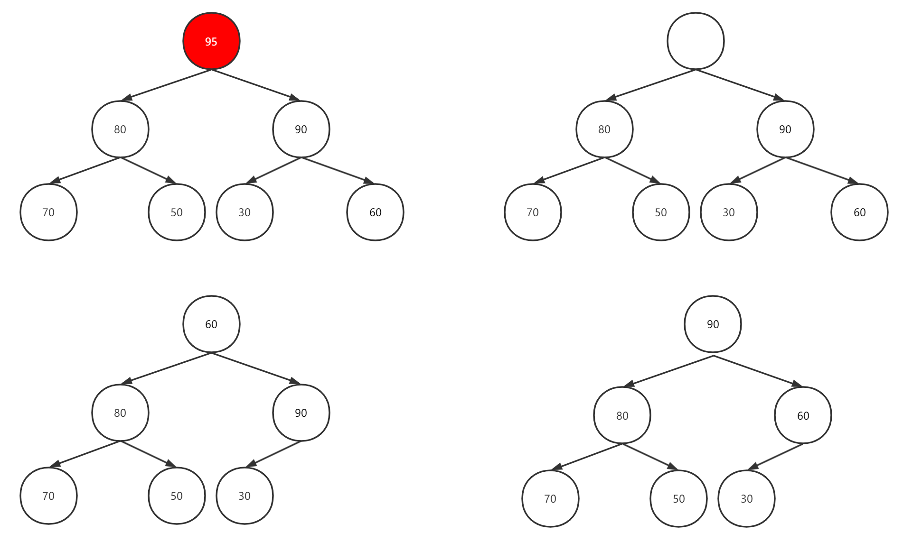
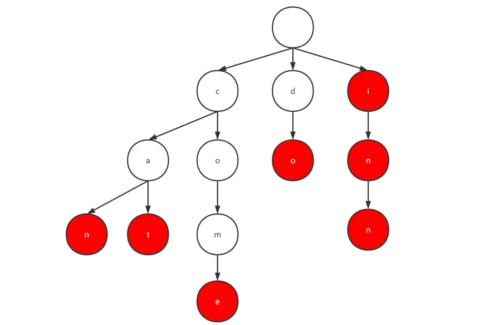
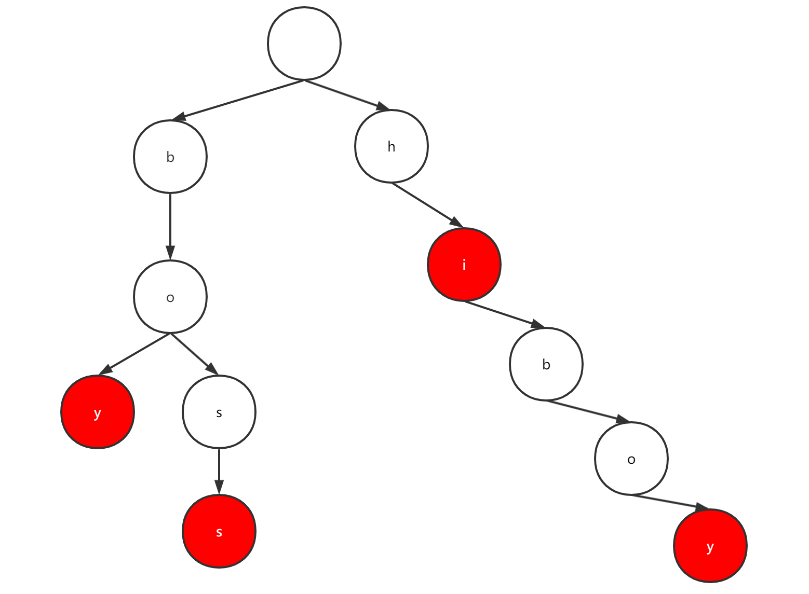

堆是一种特殊的树结构。根据根节点的值与子节点值的大小关系，堆又分为最大堆和最小堆。
最大堆：每个节点的值总是大于或者等于其任意子节点的值。所以最大堆中根节点即为最大值。
最小堆：每个节点的值总是小于或者等于其任意子节点的值。所以最小堆中根节点即为最小值。
堆的特点是最大值或最小值位于堆的顶部，只需要O（1）的时间就可以求出一个数据集合中的最大值或最小值，同时在堆中添加或删除元素的时间复杂度都是O（logn）。因此堆通常用来求一个动态的集合中的k个最大值或者最小值。

堆通常使用完全二叉树实现，在完全二叉树中，除了最底层之外其他层均为填满，最底层则是从左到右的顺序排列。所以完全二叉树就可以使用数组进行实现，因此堆也可以使用数组进行实现。
将堆的每一层从左到右的节点按照0，1，2的顺序进行排列。编号0放到数组0的位置，编号1放到数组1的位置，就可以将堆放到数组中去。比如上述最大堆和最小堆，可以使用下方的数据结构进行表示：

用数组表示堆，如果一个元素在数组中的下表是i，则其在堆中的父节点在数组中的坐标为(i-1)/2，而它的左右子节点在数组中的下标分别为2i+1和2i+2。
此处使用最大堆进行解释，最小堆和最大堆理论都一样的
最大堆添加节点
如下，在之前最大堆上添加新元素95，图解过程如下：

最大堆删除节点
通常只删除堆顶部节点，删除步骤如下：
如下，删除最大堆元素95，图解过程如下：

时间复杂度
基于上述的描述，从堆里面获取最大值或者最小值的时间复杂度为O(1)。
对堆进行增减或者删除的时间复杂度为树高O(logn)。
java使用PriorityQueue实现了堆数据结构。PriorityQueue默认的情况下是一个最小堆，如果要使用最大堆则需要自己传入Comparator。
PriorityQueue实现了Queue接口，其常用的函数如下所示：
| 操作 | 抛异常 | 不抛异常 |
|---|---|---|
| 插入新的元素 | add(e) | offer(e) |
| 删除堆顶元素 | remove | poll |
| 返回堆顶元素 | element | peek |
通常使用堆求取一个动态数据集合中最大或者最小的k个元素。通常，使用最小堆求取集合中k个最大的元素，使用最大堆求取集合中k个最小的元素。
题目：设计一个数据结构，它每次从一个数据流中读取一个数字，并得出数据流已经读出的数字中第k（k>1）大的数字。该数据结构有一个构造器，构造器接受一个参数k（整数），另外接收一个数组（假设数组长度大于k）。还有一个函数add用来动态的添加数字，并返回此时读取中的第k大的值。
列如：当k=2，nums数组为[4,3,5,6]，调用构造函数初始化之后，第一次调用add传入7此时应返回6，再次调用add传入8此时应该返回7。
分析：数据流相关的特点是输入的数据是动态添加且无限的。所以我们需要一个数据结构每次只保存之前k大的几个值，每次add的时候，只需要判断保存的值里面的最小值是否小于add的值，如果小于则替换即可。所以这里可以使用最小堆。
代码参考：
xclass HeapTest(val k: Int, num: Array<Int>) { private val minHeap = PriorityQueue<Int>() init { for (i in num) { add(i) } } fun add(e: Int): Int { if (minHeap.size < k) { minHeap.offer(e) } else if (minHeap.peek() < e) { minHeap.poll() minHeap.offer(e) } return minHeap.peek() }}测试
xxxxxxxxxx val heapTest = HeapTest(3, arrayOf(4, 5, 8, 2)) println(heapTest.add(3)) println(heapTest.add(5)) //结果 第一次调用 传入3 返回4 第二次调用 传入5 返回5前缀树，又称作字典树，用一个树状的数据结构储存字典中的所有单词。
列，一个包含can、cat、come、do、i、in、inn的前缀树如下图所示：

in对应的则是字符串inn的一部分。接下来设计一颗前缀树PrefixTree，其包含如下的操作。
insert，在前缀树中添加一个字符串。search，查找，如果该前缀树中存在该字符串，则返回true。startWith，查找字符串前缀，如果前缀树中存在包含该字符串的前缀，则返回true，否则返回false。matchingStartWith，查找所有包含该前缀的字符串，返回前缀树中所有包含该前缀的字符串，如果不存在则返回null。首先定义前缀树的数据结构，注意这里我们只考虑实现小写英文字母（具体可以根据业务逻辑调整），因为小写英文字母只有26个，所以我们可以将其放到一个容量为26的数组之中去。数组中第一个元素则是对应a的节点，第二个元素则是对应b的节点，依次往下。需要说明的是，不需要专门一个字段表示当前节点的字符，因为可以根据其在父节点对应的位置，从而得知对应的字符信息。
另外我们需要一个boolean类型的字段，去判断该节点的路径对应的字符串是否是一个完整的字符。
综上，数据结构可以定义为如下所示：
xxxxxxxxxxclass PrefixTree { private val root = Node() class Node { val childNode = Array<Node?>(26) { null } var isWord = false }}insert函数实现
我们添加boy、boss、hiboy、hi四个单词，具体分析一下前缀树添加的过程:
boy，逐个添加字母b、o和y对应的节点，并将最后一个字母y对应的节点的isWord标记为trueboss，此时前两个字母b和o对应的节点之前已经创建出来，因此只需要创建两个对应s的节点，并将第2个s对应节点的字段isWord标记为truehiboy，虽然之前有添加过b、o、y三个单词，但是其并不是hiboy的前缀，所以需要为hiboy每个单词创建节点，并将最后的节点置为truehi，由于hi为前缀，所以不需要创建节点添加，只需要将i对应的节点的isWord置为ture即可
所以，插入的代码可以做如下的实现
xxxxxxxxxx fun insert(word: String) { var localRoot = root word.toCharArray().forEach { char -> val index = char - 'a' if (localRoot.childNode[index] == null) { localRoot.childNode[index] = Node() } localRoot = localRoot.childNode[index]!! } localRoot.isWord = true }search函数实现
这个思考起来比较简单一点，直接从根节点开始查找，如果要查找的字符串对应的字符在根节点中不存在，则直接返回false，如果存在则前往该节点，在该节点查找是否存在与字符串对应的第二个字符的节点，没有返回false，如果存在则继续往下查找，直到查找完最后一个字符，最终判断如果isWord为true则返回true，否则则返回false。
所以代码如下所示：
xxxxxxxxxx fun search(word: String): Boolean { var localRoot = root word.toCharArray().forEach { char: Char -> val index = char - 'a' if (localRoot.childNode[index] != null) { localRoot = localRoot.childNode[index]!! } else { return false } } return localRoot.isWord }startWith函数实现
函数startWith和search不同，只要前缀树中存在以输入的前缀开头的单词就应该返回true。因此，函数startWith的返回值和函数search不同之外，其他代码是一样的。
xxxxxxxxxx fun startWith(word: String): Boolean { var localRoot = root word.toCharArray().forEach { char: Char -> val index = char - 'a' if (localRoot.childNode[index] != null) { localRoot = localRoot.childNode[index]!! } else { return false } } return true }matchingStartWith函数实现
该函数要求返回所有匹配到前缀的单词。
所以分为以下两个步骤：
所以代码如下所示：
xxxxxxxxxx fun matchingStartWith(word: String): List<String>? { val wordResultPre = StringBuilder() var localRoot = root word.toCharArray().forEach { char: Char -> val index = char - 'a' if (localRoot.childNode[index] != null) { wordResultPre.append(char) localRoot = localRoot.childNode[index]!! } else { return null } } //深度优先搜索 所有的剩余单词 val result = ArrayList<String>() dfs(localRoot, StringBuilder(),wordResultPre,result) return result } private fun dfs(node: Node, str: StringBuilder, wordResultPre: StringBuilder, result: ArrayList<String>) { val childNodes = node.childNode for (index in childNodes.indices) { val childNode = childNodes[index] if (childNode != null) { str.append(('a' + index).toChar()) if (childNode.isWord) { result.add(wordResultPre.toString() + str.toString()) } dfs(childNode,str, wordResultPre, result) } } }题目
输入一个包含n个单词的数组，可以把它们编码成一个字符串和n个下标。例如，单词数组["time"，"me"，"bell"]可以编码成一个字符串"time＃bell＃"，然后这些单词就可以通过下标[0，2，5]得到。对于每个下标，都可以从编码得到的字符串中相应的位置开始扫描，直到遇到'＃'字符前所经过的子字符串为单词数组中的一个单词。所以如果输入的是字符串数组["time"，"me"，"bell"]，那么编码之后最短的字符串是"time＃bell＃"，长度是10。
分析
题目的目标是得到最短的编码，因此，如果一个单词是另一个单词的后缀，那么单词在编码字符串中就不需要单独出现，这是因为单词可以通过在单词中偏移下标得到。
所以我们很容易想到前缀树，但是题目是关于字符串的后缀。所以，我们可以反转字符串，之后使用前缀树。
根据题目信息，我们不需要关心每个单词，只需要遍历每个叶子节点对应的字符串的长度，然后加在一起即可。但是注意，字符串和字符串之间存在#，所以需要对长度进行额外+1。
总体来说使用深度优先搜索，代码参考如下：
xxxxxxxxxx public void minLength(String [] words){ PrefixTree.Node node = build(words); int [] total = {0}; dfs(node,1,total); } private void dfs(PrefixTree.Node node, int length, int[] total) { boolean isLeaf = true; for (PrefixTree.Node childNode : node.getChildNode()) { if (childNode != null) { isLeaf = false; dfs(childNode, length + 1, total); } } if (isLeaf) { total[0] += length; } }